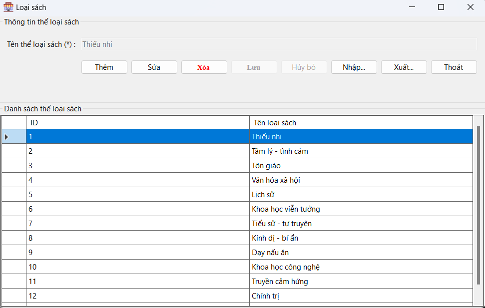

Hướng dẫn sử dụng màn hình Thể loại sách.
1. Thêm thể loại sách mới: Nhấp vào nút "Thêm". Nhập tên thể loại sách mới vào ô "Tên thể loại sách". Nhấp vào nút "Lưu" để lưu thể loại sách mới vào danh sách.
2. Sửa thể loại sách: Chọn thể loại sách cần sửa trong danh sách bằng cách nhấp vào dòng tương ứng. Nhấp vào nút "Sửa". Thay đổi tên thể loại sách trong ô "Tên thể loại sách". Nhấp vào nút "Lưu" để lưu thay đổi.
3. Xóa thể loại sách: Chọn thể loại sách cần xóa trong danh sách bằng cách nhấp vào dòng tương ứng. Nhấp vào nút "Xóa". Xác nhận xóa thể loại sách khi có hộp thoại xác nhận hiện ra.
4. Nhập dữ liệu từ file: Nhấp vào nút "Nhập...". Chọn file dữ liệu cần nhập. Thực hiện các bước theo hướng dẫn để nhập dữ liệu vào danh sách thể loại sách.
5. Xuất dữ liệu ra file: Nhấp vào nút "Xuất...". Chọn vị trí và định dạng file để lưu. Thực hiện các bước theo hướng dẫn để xuất dữ liệu từ danh sách thể loại sách.
6. Thoát ứng dụng: Nhấp vào nút "Thoát" để đóng ứng dụng.
Các nút "Lưu" và "Hủy bỏ" sẽ hiển thị khi bạn thực hiện thao tác thêm hoặc sửa thể loại sách để lưu thay đổi hoặc hủy bỏ thao tác hiện tại.